Plan: internal_docs/20260818_cosmo_refresh/implementation_plan.md. Seven sprints, 2026-08-18 → 2026-08-19, all on main. Every screenshot below was taken against npm run dev in demo mode (zero .env) unless the caption says otherwise.
Check (from src/, clean npm ci) | Before (2026-08-18 baseline, repo root) | After (2026-08-19, Sprint 7 final) |
|---|---|---|
npm run typecheck | 9 errors | 0 errors |
npm run lint | 262 errors / 257 warnings | 0 / 0 — and 0 eslint-disable lines in src/ |
npm run build | OOM (prerender crawler redirect loop) — never finished | green, ~38 s, Σ 45.3 MB (11.2 MB gzip) |
npm test | —(no harness) | 3 files / 21 tests pass, no env |
Zero-env npm run dev | boots, but /app/admin + /app/dev-tools redirect-loop and the chat/editor fetches 404 | boots DEMO MODE; / /app /app/chat /app/editor /app/billing /app/settings /internal /internal/dev-tools all 200 |
| CI | .github/workflows/ci.yml gitignored, pnpm-shaped | tracked; npm; lint → typecheck → test from src/, advisory, no env |
# baseline typecheck (scratchpad/cosmo_baseline_typecheck.log) app/components/editor/CollaborationUsers.vue(2,40): error TS2307: Cannot find module '~/composables/useEditorCollaboration' app/components/editor/ImageUploadNode.vue(15,16): error TS2304: Cannot find name 'useUpload'. app/components/home/HomeSales.vue(26,22): error TS2304: Cannot find name 'randomInt'. … (9 errors) ERROR Process exited with non-zero status (2) # baseline build (scratchpad/cosmo_baseline_build.log) — tail FATAL ERROR: Reached heap limit Allocation failed - JavaScript heap out of memory # Sprint 7 final (scratchpad/final_checks.log) == lint → exit 0 == typecheck → exit 0 == test → Test Files 3 passed (3) · Tests 21 passed (21) == build → exit 0 · Σ Total size: 45.3 MB (11.2 MB gzip)
App moved to src/, migrations to db_migrations/0001–0008, .gitignore + CI rewritten, the demo-mode redirect loop and the prerender/og-image build failures removed, dead scaffolds pruned, engines.node >=22.19. Typecheck 9 → 0, lint 262/257 → 0/0, build OOM → green.
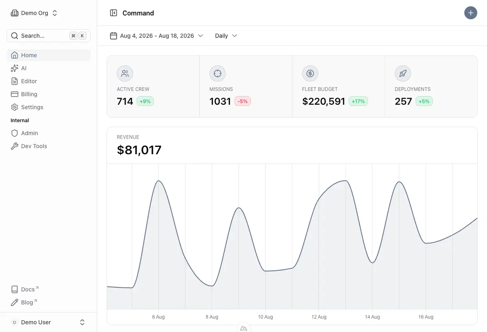
@nuxt/ui 4.10, @nuxt/content 3.15 (native sqlite), ai@7 / @ai-sdk/vue@4, gateway-only (no openai, no @ai-sdk/openai), Comark for assistant markdown, editor parity with the template. @nuxt/icon pinned to 2.3.1 (2.4.x breaks SSR icons under nitro 2.13).
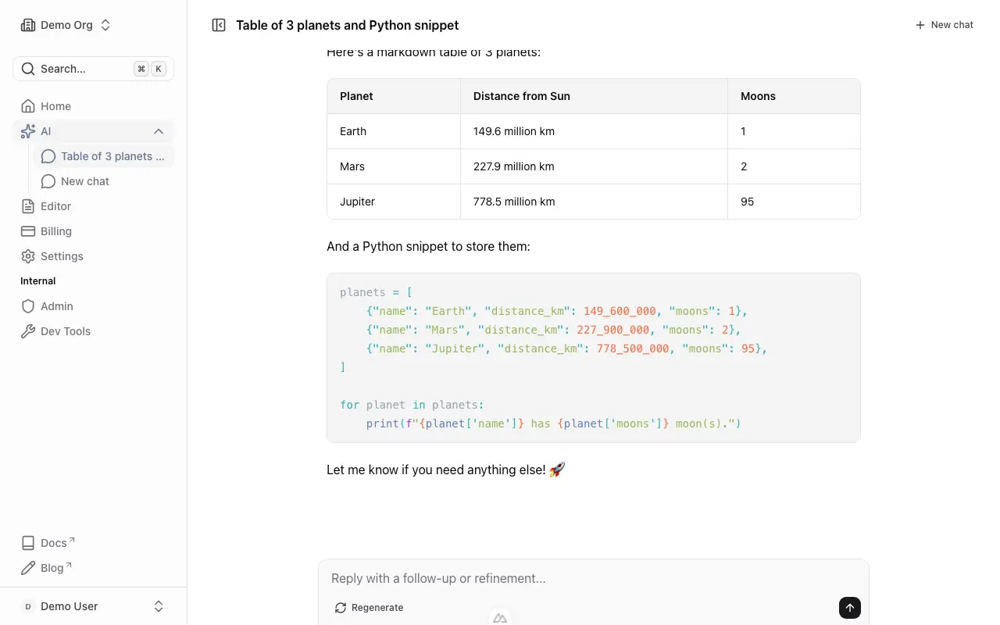
useChat(); title generated before the stream and shown in the sidebar.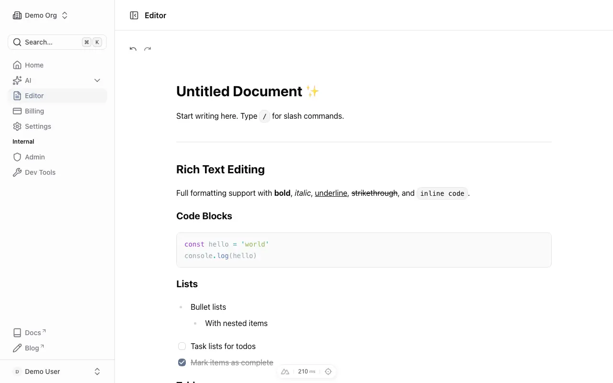
componentDetection).Camera Shy's seven auth files copied verbatim (demo early return is the only delta), env renamed to SUPABASE_URL / SUPABASE_KEY / SUPABASE_SECRET_KEY with a boot banner that warns on legacy names, /app/admin + /app/dev-tools → /internal/** (404-never-403), SITE in app/utils/site.ts drives head / JSON-LD / sitemap / OG, static brand-asset set regenerated.
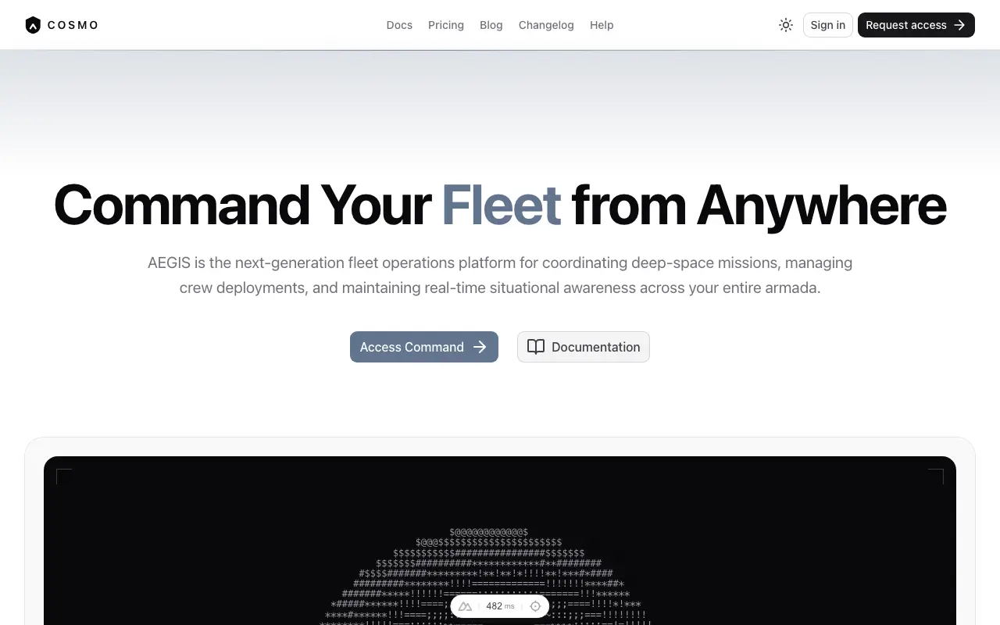
useNavigation.ts.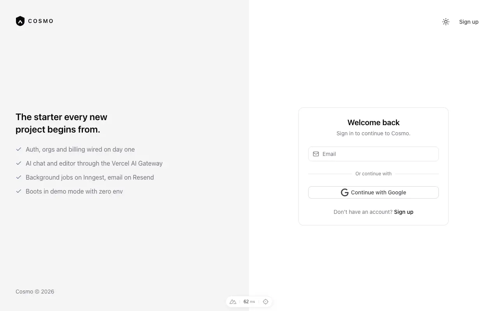
public.demoMode=false code path.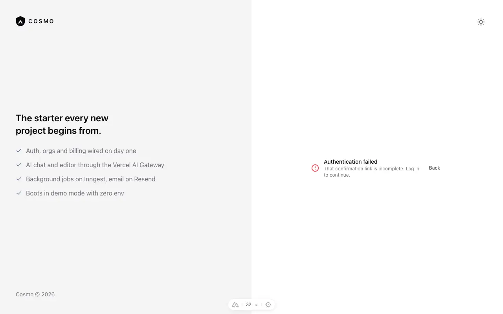
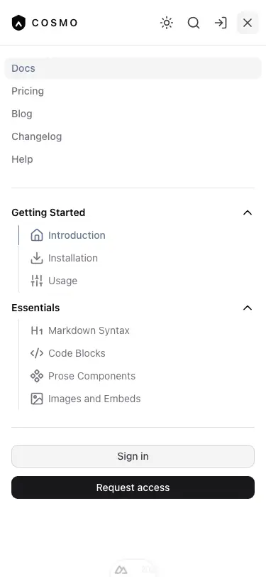
0004_analytics.sql rewritten from Camera Shy (anon/visit stitching, service-role-only log_event, real_events, internal_overview()), new 0009_app_errors / 0010_internal_reports, typed EVENTS registry + page_viewed middleware, 5xx fingerprinting, /internal overview and /internal/reports. SQL is static-checked only — no scratch Supabase project (MCP quoted $10/mo, no Docker).
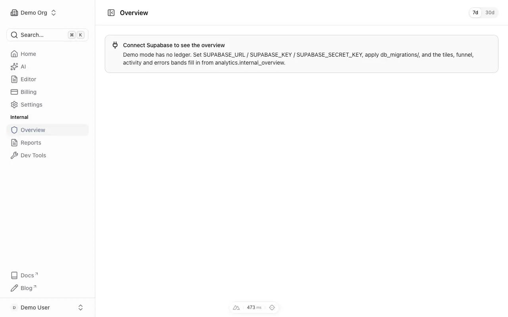
internal_overview shape; employee gate passes the fixture user.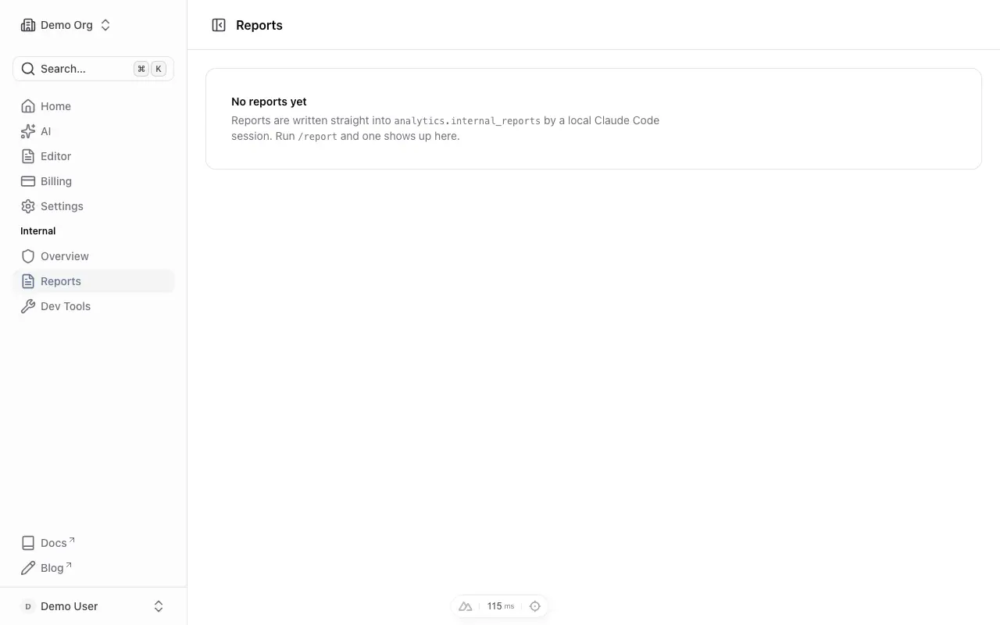
analytics.internal_reports, rendered with the hand-drawn SVG chart block; empty-state copy when none exist.Date-grouped sidebar with rename/delete, ⌘O / ⌘K shortcuts, per-message copy/regenerate, user-message edit (merge-by-id persistence). Votes, visibility, uploads and model picker deferred.
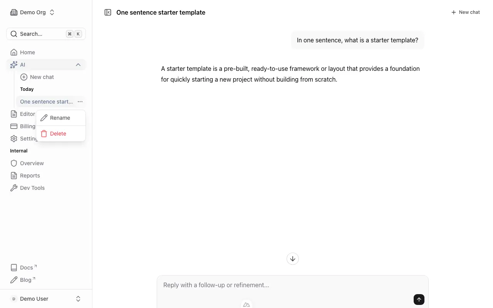
useFetch no longer server:false).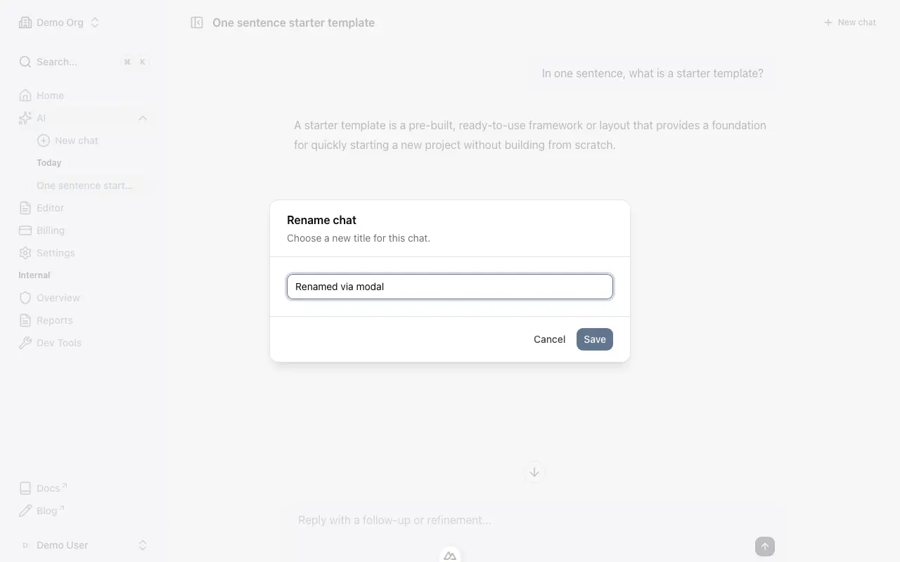
/api/chats/:id/title; the sidebar label updates in place.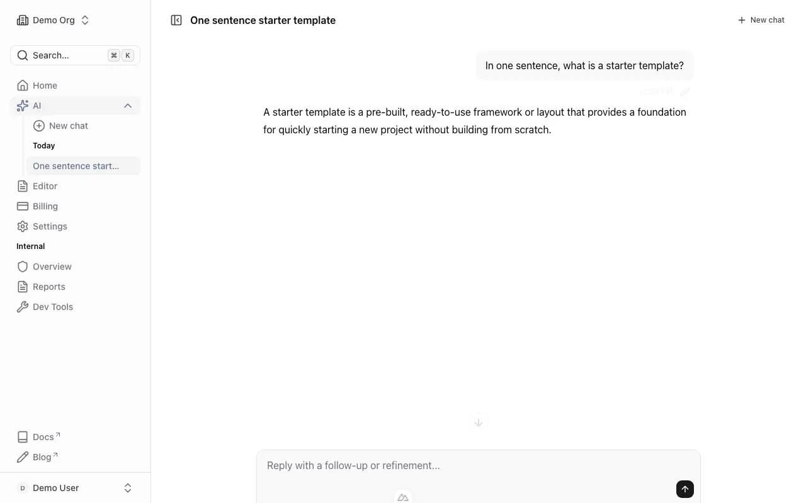
Idempotent Stripe webhook (0011_processed_stripe_events, preview-safe), generate-digest reworked to Daylight's Inngest conventions (+ the inngest v4 isDev fix so the local CLI serves without a signing key), vitest harness with 21 seed tests, CI gains npm test.
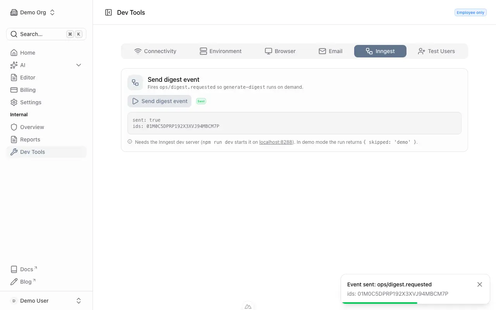
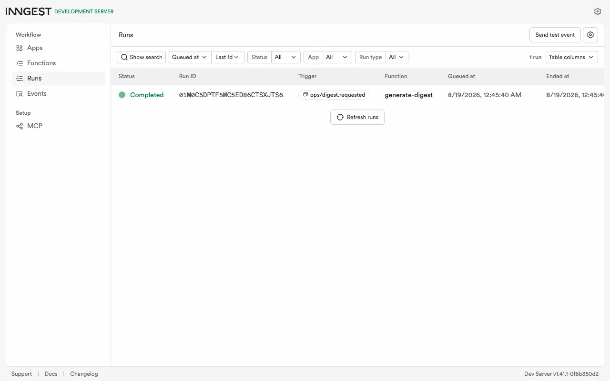
generate-digest run completes; the auto-generated failure companion shows as a second function row.$ npm test (samples/sprint6_vitest.txt) ✓ server/__tests__/utils/billing.test.ts (4) ✓ app/navigation.routes.test.ts (11) ✓ server/__tests__/api/stripe-webhook.test.ts (6) Test Files 3 passed (3) Tests 21 passed (21)
Root CLAUDE.md + README.md rewritten on Camera Shy's skeleton; internal_docs/README.md + ai_gateway_usage.md added, openai_usage.md removed; 20260505 verification PNGs → WebP; renovate.json pnpm line dropped; the 16 remaining eslint-disable lines cleared; canon docs updated per canon_updates.md (project_bootstrap, ai_sdk_usage, nuxt_ui_chat, supabase_auth, conventions README, ~/.claude/CLAUDE.md, build-from-spec + brand-assets skills); ~/claude-ops/monument/projects/{_template,cosmo}/STATE.md created.
A scratch clone was made with the updated project_bootstrap.md followed literally — rsync (no .env copied), nvm use 22, npm ci, npx nuxt upgrade --dedupe, cp .env.example .env, first-pass rebrand to "Nebula", MCP config copies — then dev / curl / Playwright / build / test, and a second dev + build with placeholder Supabase keys (the non-demo bundle). The scratch copy was deleted afterwards. Full excerpt: samples/sprint7_dryrun.txt.
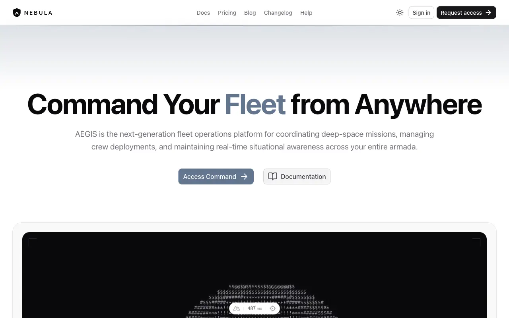
.env; the hero still carries the AEGIS demo content (scaffolding by design — content/0.index.yml is on the rebrand list).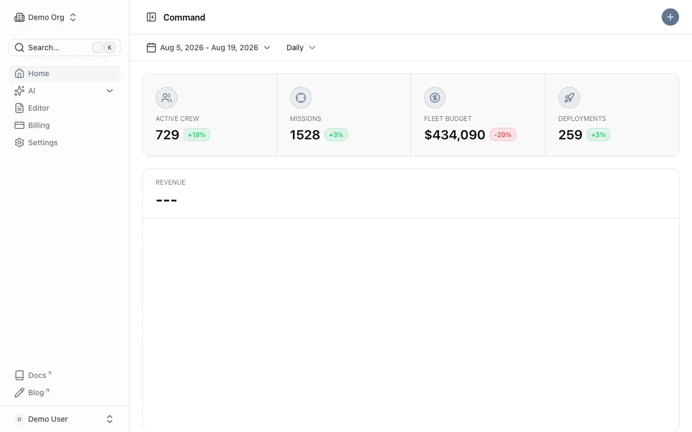
<title> reads "Nebula · Nebula" and the wordmark says Nebula: the site.ts + AppLogo.vue rebrand propagates to head and chrome.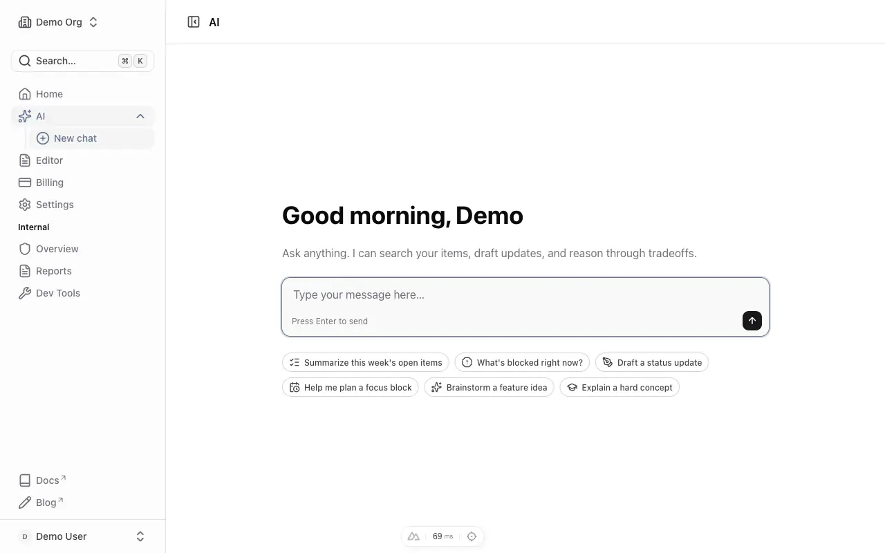
$ rsync -a --exclude={.git,node_modules,.nuxt,.data,.output,.env,.playwright-mcp} ~/Programming/Workspace/cosmo/ $SCRATCH/cosmo-dryrun/
$ test ! -f $SCRATCH/cosmo-dryrun/src/.env → OK (no .env copied)
$ nvm use 22 && npm ci → node v22.18.0; added 1612 packages in 12s (EBADENGINE warning only: floor is 22.19)
$ npx nuxt upgrade --dedupe → already on latest Nuxt (4.5.2)
$ cp .env.example .env && (rebrand site.ts / AppLogo.vue / robots.txt / package.json)
$ grep -rn cosmo.example.com . --exclude-dir=… → (none)
$ npm run dev:nuxt → DEMO MODE (no Supabase env)
/ 200 · /pricing 200 · /blog 200 · /app 200 · /app/chat 200 · /app/editor 200 · /app/billing 200
/app/settings 200 · /internal 200 · /internal/dev-tools 200 · /auth/login 302 · /api/health 200 · /sitemap.xml 200
$ npm run build → Σ 45.3 MB (11.2 MB gzip), 38 s
$ npm test → 3 files / 21 tests passed
# placeholder keys (SUPABASE_URL=https://x.supabase.co SUPABASE_KEY=sb_publishable_x SUPABASE_SECRET_KEY=sb_secret_x)
$ npm run dev:nuxt → Supabase: live
/ 200 · /auth/login 200 · /app 302 · /internal 302 · /api/app/profile 401 · /api/chats 401 · /api/internal/test-users 404
$ npm run build → Σ 45.3 MB (11.2 MB gzip)
Friction folded back into project_bootstrap.md: a note that nvm use 22 below 22.19 prints an EBADENGINE warning (install still succeeds — nvm install 22 clears it); app/layouts/auth.vue (© footer) and app/pages/help.vue added to the rebrand list; content/0.index.yml's seo.title called out as the / <title>.
@ai-sdk/openai, nuxt-og-image, supabase/migrations, /app/admin, cosmo.example.com …) over CLAUDE.md / README.md / internal_docs / src / db_migrations → only the legacy-name fallback + banner (runtimeKeys.ts, boot-banner.ts, nuxt.config.ts), SITE.url / robots.txt, the two "legacy names still warn" doc lines, and the Nuxt UI docs-template demo content (src/content/1.docs/** package-manager tabs).pnpm-lock | literal | SUPABASE_ANON_KEY | new Chat( | OpenAI SDK for worker | toUIMessageStreamResponse | csrf) over ~/claude-ops/conventions/*.md, ~/.claude/CLAUDE.md, build-from-spec/SKILL.md → only "legacy / deprecated / rename" statements (and supabase_auth.md's "matched literally" about the redirect allowlist).git ls-files .github/workflows/ci.yml → tracked; grep -c pnpm ci.yml / renovate.json → 0 / 0..webp referenced here exists; no .png under verification/.npm ci: lint 0/0 · typecheck 0 · test 21/21 · build green.